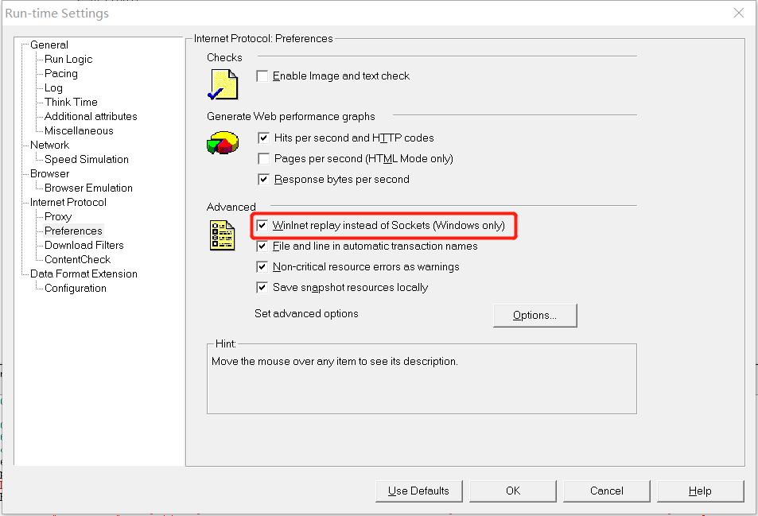

<!DOCTYPE html>
<html lang="en">
<head><meta name="generator" content="Hexo 3.8.0">
    <meta charset="utf-8">
    
    <title>
        LoadRunner日常总结 |
        
        YingLong</title>
    
    
        <meta name="keywords" content="Test，LoadRunner">
    
    <meta name="viewport" content="width=device-width, initial-scale=1, maximum-scale=1">
    <meta name="description" content="HTTPS请求LoadRunner对HTTPS接口进行测试时，最好加上web_set_sockets_option(&amp;quot;SSL_VERSION&amp;quot;,&amp;quot;TLS&amp;quot;)。 LoadRunner在对HTTPS接口进行请求时，可能出现Error -27778: SSL protocol error when attempting to connect with host &amp;">
<meta name="keywords" content="Test，LoadRunner">
<meta property="og:type" content="article">
<meta property="og:title" content="LoadRunner日常总结">
<meta property="og:url" content="https://yaoyinglong.github.io/Blog/Test/LoadRunner日常总结/index.html">
<meta property="og:site_name" content="YingLong">
<meta property="og:description" content="HTTPS请求LoadRunner对HTTPS接口进行测试时，最好加上web_set_sockets_option(&amp;quot;SSL_VERSION&amp;quot;,&amp;quot;TLS&amp;quot;)。 LoadRunner在对HTTPS接口进行请求时，可能出现Error -27778: SSL protocol error when attempting to connect with host &amp;">
<meta property="og:locale" content="en">
<meta property="og:image" content="https://yaoyinglong.github.io/images/Test/MERR27778.png">
<meta property="og:updated_time" content="2019-06-27T09:26:09.594Z">
<meta name="twitter:card" content="summary">
<meta name="twitter:title" content="LoadRunner日常总结">
<meta name="twitter:description" content="HTTPS请求LoadRunner对HTTPS接口进行测试时，最好加上web_set_sockets_option(&amp;quot;SSL_VERSION&amp;quot;,&amp;quot;TLS&amp;quot;)。 LoadRunner在对HTTPS接口进行请求时，可能出现Error -27778: SSL protocol error when attempting to connect with host &amp;">
<meta name="twitter:image" content="https://yaoyinglong.github.io/images/Test/MERR27778.png">
    

    

    
        <link rel="icon" href="/favicon.ico">
    

    <link rel="stylesheet" href="/libs/font-awesome/css/font-awesome.min.css">
    <link rel="stylesheet" href="/libs/open-sans/styles.css">
    <link rel="stylesheet" href="/libs/source-code-pro/styles.css">

    <link rel="stylesheet" href="/css/style.css">
    <script src="/libs/jquery/2.1.3/jquery.min.js"></script>
    <script src="/libs/jquery/plugins/cookie/1.4.1/jquery.cookie.js"></script>
    
    
        <link rel="stylesheet" href="/libs/lightgallery/css/lightgallery.min.css">
    
    
        <link rel="stylesheet" href="/libs/justified-gallery/justifiedGallery.min.css">
    
    
    
    


</head>
</html>
<body>
<div id="container">
    <header id="header">
    <div id="header-main" class="header-inner">
        <div class="outer">
            <a href="/" id="logo">
                <i class="logo"></i>
                <span class="site-title">YingLong</span>
            </a>
            <nav id="main-nav">
                
                    <a class="main-nav-link" href="/">Home</a>
                
                    <a class="main-nav-link" href="/archives">Archives</a>
                
                    <a class="main-nav-link" href="/categories">Categories</a>
                
                    <a class="main-nav-link" href="/tags">Tags</a>
                
                    <a class="main-nav-link" href="/about">About</a>
                
            </nav>
            
            <div id="search-form-wrap">
    
        <form class="search-form">
            <input type="text" class="ins-search-input search-form-input" placeholder="Search">
            <button type="submit" class="search-form-submit"></button>
        </form>
        <div class="ins-search">
    <div class="ins-search-mask"></div>
    <div class="ins-search-container">
        <div class="ins-input-wrapper">
            <input type="text" class="ins-search-input" placeholder="Type something...">
            <span class="ins-close ins-selectable"><i class="fa fa-times-circle"></i></span>
        </div>
        <div class="ins-section-wrapper">
            <div class="ins-section-container"></div>
        </div>
    </div>
</div>
<script>
    (function (window) {
        var INSIGHT_CONFIG = {
            TRANSLATION: {
                POSTS: 'Posts',
                PAGES: 'Pages',
                CATEGORIES: 'Categories',
                TAGS: 'Tags',
                UNTITLED: '(Untitled)',
            },
            ROOT_URL: '/',
            CONTENT_URL: '/content.json',
        };
        window.INSIGHT_CONFIG = INSIGHT_CONFIG;
    })(window);
</script>
<script src="/js/insight.js"></script>
    
</div>
        </div>
    </div>
    <div id="main-nav-mobile" class="header-sub header-inner">
        <table class="menu outer">
            <tr>
                
                    <td><a class="main-nav-link" href="/">Home</a></td>
                
                    <td><a class="main-nav-link" href="/archives">Archives</a></td>
                
                    <td><a class="main-nav-link" href="/categories">Categories</a></td>
                
                    <td><a class="main-nav-link" href="/tags">Tags</a></td>
                
                    <td><a class="main-nav-link" href="/about">About</a></td>
                
                <td>
                    
    <div class="search-form">
        <input type="text" class="ins-search-input search-form-input" placeholder="Search">
    </div>

                </td>
            </tr>
        </table>
    </div>
</header>

    <div class="outer">
        
        
            <aside id="sidebar">
    
        
    <div class="widget-wrap" id="categories">
        <h3 class="widget-title">
            <span>categories</span>
            &nbsp;
            <a id="allExpand" href="#">
                <i class="fa fa-angle-double-down fa-2x"></i>
            </a>
        </h3>

        
        
        
            <ul class="unstyled" id="tree">
                
                    <li class="directory">
                        <a href="#" data-role="directory">
                            <i class="fa fa-folder"></i>
                            &nbsp;
                            DB
                        </a>
                        
            <ul class="unstyled" id="tree">
                
                    <li class="file"><a href="/Blog/DB/MySQL基础/">MySQL基础</a></li>
                
                    <li class="file"><a href="/Blog/DB/MySQL常用SQL总结/">MySQL常用SQL总结</a></li>
                
            </ul>
        
                    </li>
                
                    <li class="directory">
                        <a href="#" data-role="directory">
                            <i class="fa fa-folder"></i>
                            &nbsp;
                            Git
                        </a>
                        
            <ul class="unstyled" id="tree">
                
                    <li class="file"><a href="/Blog/Git/GIt基本概念/">Git基本概念</a></li>
                
                    <li class="file"><a href="/Blog/Git/GIt常用命令/">Git常用命令</a></li>
                
                    <li class="file"><a href="/Blog/Git/分支管理理解/">分支管理理解</a></li>
                
            </ul>
        
                    </li>
                
                    <li class="directory">
                        <a href="#" data-role="directory">
                            <i class="fa fa-folder"></i>
                            &nbsp;
                            Go
                        </a>
                        
            <ul class="unstyled" id="tree">
                
                    <li class="file"><a href="/Blog/Go/Go基础/">Go基础</a></li>
                
            </ul>
        
                    </li>
                
                    <li class="directory">
                        <a href="#" data-role="directory">
                            <i class="fa fa-folder"></i>
                            &nbsp;
                            Java
                        </a>
                        
            <ul class="unstyled" id="tree">
                
                    <li class="directory">
                        <a href="#" data-role="directory">
                            <i class="fa fa-folder"></i>
                            &nbsp;
                            VM
                        </a>
                        
            <ul class="unstyled" id="tree">
                
                    <li class="file"><a href="/Blog/Java/VM/HotSpot收集算法实现/">HotSpot收集算法实现</a></li>
                
                    <li class="file"><a href="/Blog/Java/VM/JVM内存池/">JVM内存池</a></li>
                
                    <li class="file"><a href="/Blog/Java/VM/内存非配与回收策略/">内存分配与回收策略</a></li>
                
                    <li class="file"><a href="/Blog/Java/VM/Java内存区域/">Java内存区域</a></li>
                
                    <li class="file"><a href="/Blog/Java/VM/Minor&Major&Full GC/">Minor&Major&Full GC</a></li>
                
                    <li class="file"><a href="/Blog/Java/VM/OutOfMemoryError异常/">OOM异常实验</a></li>
                
                    <li class="file"><a href="/Blog/Java/VM/垃圾收集算法/">垃圾收集算法</a></li>
                
                    <li class="file"><a href="/Blog/Java/VM/堆中对象分配&布局&访问/">堆中对象分配&布局&访问</a></li>
                
                    <li class="file"><a href="/Blog/Java/VM/对象是否存活/">对象是否存活</a></li>
                
                    <li class="file"><a href="/Blog/Java/VM/类加载的时机/">类加载的时机</a></li>
                
                    <li class="file"><a href="/Blog/Java/VM/运行时栈帧结构/">运行时栈帧结构</a></li>
                
                    <li class="file"><a href="/Blog/Java/VM/垃圾收集器/">垃圾收集器</a></li>
                
                    <li class="file"><a href="/Blog/Java/VM/方法调用/">方法调用</a></li>
                
                    <li class="file"><a href="/Blog/Java/VM/字节码指令/">字节码指令</a></li>
                
                    <li class="file"><a href="/Blog/Java/VM/理解GC日志/">理解GC日志</a></li>
                
                    <li class="file"><a href="/Blog/Java/VM/类加载器/">类加载器</a></li>
                
                    <li class="file"><a href="/Blog/Java/VM/Class文件结构/">Class文件结构</a></li>
                
                    <li class="file"><a href="/Blog/Java/VM/属性表集合/">属性表集合</a></li>
                
                    <li class="file"><a href="/Blog/Java/VM/类加载过程/">类加载过程</a></li>
                
            </ul>
        
                    </li>
                
                    <li class="directory">
                        <a href="#" data-role="directory">
                            <i class="fa fa-folder"></i>
                            &nbsp;
                            基础
                        </a>
                        
            <ul class="unstyled" id="tree">
                
                    <li class="file"><a href="/Blog/Java/基础/lambda常用总结/">lambda常用总结</a></li>
                
                    <li class="file"><a href="/Blog/Java/基础/时间及日期总结/">Java8时间及日期</a></li>
                
                    <li class="file"><a href="/Blog/Java/基础/位运算/">位运算</a></li>
                
                    <li class="file"><a href="/Blog/Java/基础/HashMap源码分析JDK8/">HashMap源码分析JDK8</a></li>
                
                    <li class="file"><a href="/Blog/Java/基础/HashMap源码分析JDK7/">HashMap源码分析JDK7</a></li>
                
                    <li class="file"><a href="/Blog/Java/基础/反射基础/">反射基础</a></li>
                
                    <li class="file"><a href="/Blog/Java/基础/动态代理/">动态代理</a></li>
                
            </ul>
        
                    </li>
                
                    <li class="directory">
                        <a href="#" data-role="directory">
                            <i class="fa fa-folder"></i>
                            &nbsp;
                            工具
                        </a>
                        
            <ul class="unstyled" id="tree">
                
                    <li class="file"><a href="/Blog/Java/工具/Java中调用Groovy脚本/">Java中调用Groovy脚本</a></li>
                
                    <li class="file"><a href="/Blog/Java/工具/国密SM2/">国密SM2</a></li>
                
                    <li class="file"><a href="/Blog/Java/工具/国密SM4/">国密SM4</a></li>
                
            </ul>
        
                    </li>
                
                    <li class="directory">
                        <a href="#" data-role="directory">
                            <i class="fa fa-folder"></i>
                            &nbsp;
                            并发
                        </a>
                        
            <ul class="unstyled" id="tree">
                
                    <li class="file"><a href="/Blog/Java/并发/原子性、可见性、有序性/">原子性、可见性、有序性</a></li>
                
                    <li class="file"><a href="/Blog/Java/并发/Synchronized总结/">Synchronized总结</a></li>
                
                    <li class="file"><a href="/Blog/Java/并发/线程安全/">线程安全</a></li>
                
                    <li class="file"><a href="/Blog/Java/并发/线程安全实现方式/">线程安全实现方式</a></li>
                
                    <li class="file"><a href="/Blog/Java/并发/ThreadLocal原理/">ThreadLocal原理</a></li>
                
                    <li class="file"><a href="/Blog/Java/并发/Volatile原理/">Volatile原理</a></li>
                
                    <li class="file"><a href="/Blog/Java/并发/Java与线程/">Java与线程</a></li>
                
                    <li class="file"><a href="/Blog/Java/并发/Java内存模型与线程/">Java内存模型</a></li>
                
            </ul>
        
                    </li>
                
                    <li class="file"><a href="/Blog/Java/JVM整体概览/">JVM整体概览</a></li>
                
            </ul>
        
                    </li>
                
                    <li class="directory">
                        <a href="#" data-role="directory">
                            <i class="fa fa-folder"></i>
                            &nbsp;
                            Linux
                        </a>
                        
            <ul class="unstyled" id="tree">
                
                    <li class="file"><a href="/Blog/Linux/Linux常用命令/">Linux常用命令</a></li>
                
                    <li class="file"><a href="/Blog/Linux/Linux常用技巧/">Linux常用技巧</a></li>
                
            </ul>
        
                    </li>
                
                    <li class="directory">
                        <a href="#" data-role="directory">
                            <i class="fa fa-folder"></i>
                            &nbsp;
                            Maven
                        </a>
                        
            <ul class="unstyled" id="tree">
                
                    <li class="file"><a href="/Blog/Maven/Maven加密JAR包/">Maven加密JAR包</a></li>
                
                    <li class="file"><a href="/Blog/Maven/Maven基础/">Maven基础</a></li>
                
                    <li class="file"><a href="/Blog/Maven/Maven常用/">Maven常用</a></li>
                
                    <li class="file"><a href="/Blog/Maven/Maven属性/">Maven属性</a></li>
                
                    <li class="file"><a href="/Blog/Maven/Maven常用工具/">Maven常用工具</a></li>
                
                    <li class="file"><a href="/Blog/Maven/Maven插件编写/">Maven插件编写</a></li>
                
                    <li class="file"><a href="/Blog/Maven/Maven生命周期/">Maven生命周期</a></li>
                
                    <li class="file"><a href="/Blog/Maven/Maven个性化打包/">Maven个性化打包</a></li>
                
                    <li class="file"><a href="/Blog/Maven/Maven仓库/">Maven仓库</a></li>
                
                    <li class="file"><a href="/Blog/Maven/Maven插件基础/">Maven插件基础</a></li>
                
                    <li class="file"><a href="/Blog/Maven/Maven聚合与继承/">Maven聚合与继承</a></li>
                
                    <li class="file"><a href="/Blog/Maven/Maven常用插件/">Maven常用插件</a></li>
                
                    <li class="file"><a href="/Blog/Maven/Maven标签全解/">Maven标签全解</a></li>
                
                    <li class="file"><a href="/Blog/Maven/Maven Assembly标签全解/">Maven Assembly标签全解</a></li>
                
            </ul>
        
                    </li>
                
                    <li class="directory">
                        <a href="#" data-role="directory">
                            <i class="fa fa-folder"></i>
                            &nbsp;
                            Python
                        </a>
                        
            <ul class="unstyled" id="tree">
                
                    <li class="file"><a href="/Blog/Python/Excel文件数据抽取/">Excel文件数据抽取</a></li>
                
            </ul>
        
                    </li>
                
                    <li class="directory open">
                        <a href="#" data-role="directory">
                            <i class="fa fa-folder-open"></i>
                            &nbsp;
                            Test
                        </a>
                        
            <ul class="unstyled" id="tree">
                
                    <li class="file"><a href="/Blog/Test/IT测试总结/">IT测试总结</a></li>
                
                    <li class="file"><a href="/Blog/Test/JMeter日常总结/">JMeter日常总结</a></li>
                
                    <li class="file active"><a href="/Blog/Test/LoadRunner日常总结/">LoadRunner日常总结</a></li>
                
                    <li class="file"><a href="/Blog/Test/UT测试总结/">UT测试总结</a></li>
                
            </ul>
        
                    </li>
                
                    <li class="directory">
                        <a href="#" data-role="directory">
                            <i class="fa fa-folder"></i>
                            &nbsp;
                            协议族
                        </a>
                        
            <ul class="unstyled" id="tree">
                
                    <li class="file"><a href="/Blog/协议族/TCPIP四层&五层模型/">TCP/IP四层&五层模型</a></li>
                
                    <li class="file"><a href="/Blog/协议族/网络基础知识/">网络基础知识</a></li>
                
                    <li class="file"><a href="/Blog/协议族/以太网/">以太网</a></li>
                
                    <li class="file"><a href="/Blog/协议族/地址解析协议/">地址解析协议ARP</a></li>
                
            </ul>
        
                    </li>
                
                    <li class="directory">
                        <a href="#" data-role="directory">
                            <i class="fa fa-folder"></i>
                            &nbsp;
                            杂记
                        </a>
                        
            <ul class="unstyled" id="tree">
                
                    <li class="file"><a href="/Blog/杂记/IDEA实用插件/">IDEA实用插件</a></li>
                
                    <li class="file"><a href="/Blog/杂记/JAVA实用工具/">JAVA实用工具</a></li>
                
                    <li class="file"><a href="/Blog/杂记/IDEA快捷的使用/">IDEA的快捷使用</a></li>
                
                    <li class="file"><a href="/Blog/杂记/Win实用工具/">Win实用工具</a></li>
                
                    <li class="file"><a href="/Blog/杂记/XSD使用总结/">XSD实用总结</a></li>
                
                    <li class="file"><a href="/Blog/杂记/SonarQube配置总结/">SonarQube配置总结</a></li>
                
            </ul>
        
                    </li>
                
                    <li class="directory">
                        <a href="#" data-role="directory">
                            <i class="fa fa-folder"></i>
                            &nbsp;
                            框架
                        </a>
                        
            <ul class="unstyled" id="tree">
                
                    <li class="directory">
                        <a href="#" data-role="directory">
                            <i class="fa fa-folder"></i>
                            &nbsp;
                            Spring
                        </a>
                        
            <ul class="unstyled" id="tree">
                
                    <li class="file"><a href="/Blog/框架/Spring/Spring Gzip压缩/">Spring Gzip压缩</a></li>
                
                    <li class="file"><a href="/Blog/框架/Spring/IoC容器/">IoC容器</a></li>
                
                    <li class="file"><a href="/Blog/框架/Spring/Spring整体架构/">Spring整体架构</a></li>
                
                    <li class="file"><a href="/Blog/框架/Spring/Spring知识点/">Spring知识点</a></li>
                
                    <li class="file"><a href="/Blog/框架/Spring/Spring线程池跨线程数据共享/">Spring线程池跨线程数据共享</a></li>
                
                    <li class="file"><a href="/Blog/框架/Spring/Hystrix总结/">Hystrix总结</a></li>
                
                    <li class="file"><a href="/Blog/框架/Spring/SpringMvc异步/">SpringMvc异步原理及实现</a></li>
                
            </ul>
        
                    </li>
                
                    <li class="directory">
                        <a href="#" data-role="directory">
                            <i class="fa fa-folder"></i>
                            &nbsp;
                            常见问题
                        </a>
                        
            <ul class="unstyled" id="tree">
                
                    <li class="file"><a href="/Blog/框架/常见问题/HBase依赖冲突/">HBase依赖冲突</a></li>
                
                    <li class="file"><a href="/Blog/框架/常见问题/Maven编译后文件损坏/">Maven编译后文件损坏</a></li>
                
            </ul>
        
                    </li>
                
                    <li class="file"><a href="/Blog/框架/Redis分布式锁实现/">Redis分布式锁实现</a></li>
                
                    <li class="file"><a href="/Blog/框架/Tomcat工作原理/">Tomcat工作原理</a></li>
                
                    <li class="file"><a href="/Blog/框架/Redis总结/">Redis总结</a></li>
                
            </ul>
        
                    </li>
                
                    <li class="directory">
                        <a href="#" data-role="directory">
                            <i class="fa fa-folder"></i>
                            &nbsp;
                            算法
                        </a>
                        
            <ul class="unstyled" id="tree">
                
                    <li class="file"><a href="/Blog/算法/二叉搜索树/">二叉搜索树</a></li>
                
                    <li class="file"><a href="/Blog/算法/平衡二叉树/">平衡二叉树</a></li>
                
                    <li class="file"><a href="/Blog/算法/树基础/">树基础</a></li>
                
                    <li class="file"><a href="/Blog/算法/排序算法/">排序算法</a></li>
                
                    <li class="file"><a href="/Blog/算法/图基础/">图基础</a></li>
                
            </ul>
        
                    </li>
                
                    <li class="directory">
                        <a href="#" data-role="directory">
                            <i class="fa fa-folder"></i>
                            &nbsp;
                            设计模式
                        </a>
                        
            <ul class="unstyled" id="tree">
                
                    <li class="file"><a href="/Blog/设计模式/SOLID基本原则/">SOLID基本原则</a></li>
                
                    <li class="file"><a href="/Blog/设计模式/设计模式概览/">设计模式概览</a></li>
                
                    <li class="file"><a href="/Blog/设计模式/单例模式/">单例模式</a></li>
                
                    <li class="file"><a href="/Blog/设计模式/工厂模式/">工厂模式</a></li>
                
            </ul>
        
                    </li>
                
                    <li class="file"><a href="/Blog/index/">Welcome YingLong's Blog</a></li>
                
            </ul>
        
    </div>
    <script>
        $(document).ready(function () {
            var iconFolderOpenClass = 'fa-folder-open';
            var iconFolderCloseClass = 'fa-folder';
            var iconAllExpandClass = 'fa-angle-double-down';
            var iconAllPackClass = 'fa-angle-double-up';
            // Handle directory-tree expansion:
            // 左键单独展开目录
            $(document).on('click', '#categories a[data-role="directory"]', function (event) {
                event.preventDefault();

                var icon = $(this).children('.fa');
                var expanded = icon.hasClass(iconFolderOpenClass);
                var subtree = $(this).siblings('ul');
                icon.removeClass(iconFolderOpenClass).removeClass(iconFolderCloseClass);
                if (expanded) {
                    if (typeof subtree != 'undefined') {
                        subtree.slideUp({duration: 100});
                    }
                    icon.addClass(iconFolderCloseClass);
                } else {
                    if (typeof subtree != 'undefined') {
                        subtree.slideDown({duration: 100});
                    }
                    icon.addClass(iconFolderOpenClass);
                }
            });
            // 右键展开下属所有目录
            $('#categories a[data-role="directory"]').bind("contextmenu", function (event) {
                event.preventDefault();

                var icon = $(this).children('.fa');
                var expanded = icon.hasClass(iconFolderOpenClass);
                var listNode = $(this).siblings('ul');
                var subtrees = $.merge(listNode.find('li ul'), listNode);
                var icons = $.merge(listNode.find('.fa'), icon);
                icons.removeClass(iconFolderOpenClass).removeClass(iconFolderCloseClass);
                if (expanded) {
                    subtrees.slideUp({duration: 100});
                    icons.addClass(iconFolderCloseClass);
                } else {
                    subtrees.slideDown({duration: 100});
                    icons.addClass(iconFolderOpenClass);
                }
            })
            // 展开关闭所有目录按钮
            $(document).on('click', '#allExpand', function (event) {
                event.preventDefault();

                var icon = $(this).children('.fa');
                var expanded = icon.hasClass(iconAllExpandClass);
                icon.removeClass(iconAllExpandClass).removeClass(iconAllPackClass);
                if (expanded) {
                    $('#sidebar .fa.fa-folder').removeClass('fa-folder').addClass('fa-folder-open')
                    $('#categories li ul').slideDown({duration: 100});
                    icon.addClass(iconAllPackClass);
                } else {
                    $('#sidebar .fa.fa-folder-open').removeClass('fa-folder-open').addClass('fa-folder')
                    $('#categories li ul').slideUp({duration: 100});
                    icon.addClass(iconAllExpandClass);
                }
            });
        });
    </script>

    
    <div id="toTop" class="fa fa-angle-up"></div>
</aside>
        
        <section id="main"><article id="post-Test/LoadRunner日常总结" class="article article-type-post" itemscope itemprop="blogPost">
    <div class="article-inner">
        
        
            <header class="article-header">
                
                    <div class="article-meta">
                        
    <div class="article-category">
        <i class="fa fa-folder"></i>
        <a class="article-category-link" href="/categories/Test/">Test</a>
    </div>

                        
    <div class="article-tag">
        <i class="fa fa-tag"></i>
        <a class="tag-link" href="/tags/Test，LoadRunner/">Test，LoadRunner</a>
    </div>

                        
    <div class="article-date">
        <i class="fa fa-calendar"></i>
        <a href="/Blog/Test/LoadRunner日常总结/">
            <time datetime="2018-04-11T16:00:00.000Z" itemprop="datePublished">2018-04-12</time>
        </a>
    </div>


                        
                    </div>
                
                
    
        <h1 class="article-title" itemprop="name">
            LoadRunner日常总结
        </h1>
    

            </header>
        
        
        <div class="article-entry" itemprop="articleBody">
            
            
                    
            
            
                <h3 id="HTTPS请求"><a href="#HTTPS请求" class="headerlink" title="HTTPS请求"></a>HTTPS请求</h3><p>LoadRunner对HTTPS接口进行测试时，最好加上<strong><code>web_set_sockets_option(&quot;SSL_VERSION&quot;,&quot;TLS&quot;)</code></strong>。</p>
<p>LoadRunner在对HTTPS接口进行请求时，可能出现<strong><code>Error -27778: SSL protocol error when attempting to connect with host &quot;XXX&quot;  [MsgId: MERR-27778]</code></strong>错误。</p>
<p>设置<strong><code>Vuser -&gt; Run-time Setting</code></strong>找到<strong><code>Internet Protocol -&gt; Preferences -&gt; Advanced</code></strong>勾选<strong><code>winlnet replay instead of sockets(windows only)</code></strong>选项。</p>
<p></p>
<h3 id="日志中文打印"><a href="#日志中文打印" class="headerlink" title="日志中文打印"></a>日志中文打印</h3><p>通常在请求时想看到请求参数、返回结果等数据，可以在<strong><code>Vuser -&gt; run-time setting -&gt; general -&gt; log</code></strong>勾选<strong><code>extended log</code></strong>且勾选其下的三个选项。但是这种方式不能解决中文乱码问题。</p>
<p>可以将中文数据通过<strong><code>web_reg_save_param</code></strong>单独提取出来<strong><code>lr_convert_string_encoding</code></strong>转码后通过<strong><code>lr_output_message</code></strong>或<strong><code>lr_log_message</code></strong>打印：</p>
<figure class="highlight c++"><table><tr><td class="gutter"><pre><span class="line">1</span><br><span class="line">2</span><br><span class="line">3</span><br><span class="line">4</span><br></pre></td><td class="code"><pre><span class="line">web_reg_save_param(<span class="string">"result"</span>, <span class="string">"LB=message\":\""</span>, <span class="string">"RB=\""</span>, LAST);</span><br><span class="line"><span class="comment">// web_custom_request请求</span></span><br><span class="line">lr_convert_string_encoding(lr_eval_string(<span class="string">"&#123;result&#125;"</span>), <span class="string">"utf-8"</span>, <span class="literal">NULL</span>, <span class="string">"msg"</span>);</span><br><span class="line">lr_output_message(<span class="string">"message--------%s"</span>,lr_eval_string(<span class="string">"&#123;msg&#125;"</span>));</span><br></pre></td></tr></table></figure>
<h3 id="中文参数乱码"><a href="#中文参数乱码" class="headerlink" title="中文参数乱码"></a>中文参数乱码</h3><p>通常在通过<strong><code>LoadRunner</code></strong>请求接口时，若<strong>请求参数中存在中文参数</strong>，虽然在<strong><code>Replay Log</code></strong>中打印的内容可能并没有乱码，但是请求到服务器可能就乱码了，从而导致接口请求失败。</p>
<p>为了解决中文参数导致的中文乱码，可以将中文参数提取出来通过<strong><code>lr_convert_string_encoding</code></strong>进行<strong><code>转码</code></strong>后使用。首先通过通过<strong><code>lr_save_string</code></strong>将中文参数参数化，也可以到<strong><code>Parameter List</code></strong>进行设置。然后将参数转成<strong><code>UTF-8</code></strong>，最后将参数转成<strong><code>URL</code>编码</strong>。</p>
<figure class="highlight c++"><table><tr><td class="gutter"><pre><span class="line">1</span><br><span class="line">2</span><br><span class="line">3</span><br><span class="line">4</span><br><span class="line">5</span><br><span class="line">6</span><br></pre></td><td class="code"><pre><span class="line">lr_save_string(<span class="string">"奚姝"</span>,<span class="string">"name"</span>);</span><br><span class="line">lr_convert_string_encoding(lr_eval_string(<span class="string">"&#123;name&#125;"</span>), LR_ENC_SYSTEM_LOCALE, LR_ENC_UTF8, <span class="string">"encode_name"</span>);</span><br><span class="line">lr_save_string(lr_eval_string(<span class="string">"&#123;encode_name&#125;"</span>),<span class="string">"name"</span>);</span><br><span class="line">web_convert_param(<span class="string">"name"</span>, <span class="string">"SourceEncoding=PLAIN"</span>, <span class="string">"TargetEncoding=URL"</span>, LAST);</span><br><span class="line"></span><br><span class="line">lr_log_message(<span class="string">"参数化结果name：%s"</span>, lr_eval_string(<span class="string">"&#123;name&#125;"</span>));</span><br></pre></td></tr></table></figure>
<h3 id="Web请求"><a href="#Web请求" class="headerlink" title="Web请求"></a>Web请求</h3><p>LR可以通过<strong><code>web_custom_request</code></strong>函数发送<strong><code>POST</code></strong>或者<strong><code>GET</code></strong>请求。对于普通POST请求，未将请求参数放到<strong><code>RequestBody</code></strong>中的，可以将参数在<strong><code>Body</code></strong>中通过<strong><code>&amp;</code></strong>符号进行拼接。</p>
<figure class="highlight c++"><table><tr><td class="gutter"><pre><span class="line">1</span><br><span class="line">2</span><br><span class="line">3</span><br><span class="line">4</span><br><span class="line">5</span><br></pre></td><td class="code"><pre><span class="line">web_custom_request(<span class="string">"web_custom_request"</span>,<span class="string">"URL=&#123;url&#125;"</span>,<span class="string">"Method=POST"</span>,</span><br><span class="line">		<span class="string">"Resource=0"</span>,<span class="string">"RecContentType=Application/json"</span>,<span class="string">"Referer="</span>,<span class="string">"Mode=HTML"</span>,</span><br><span class="line">		<span class="string">"EncType=application/x-www-form-urlencoded;charset=UTF-8"</span>,</span><br><span class="line">                <span class="comment">//"EncType=application/json;charset=UTF-8",</span></span><br><span class="line">		<span class="string">"Body=name=&#123;name&#125;&amp;phone=&#123;phone&#125;"</span>,LAST);</span><br></pre></td></tr></table></figure>
<p>对于请求参数放到<strong><code>RequestBody</code></strong>中的，可以直接将请求参数转成字符串放到<strong><code>Body</code></strong>中。或者放到<strong><code>RAW_BODY_START</code></strong>和<strong><code>RAW_BODY_END</code></strong>之间，其中<strong><code>200</code></strong>指代参数长度。</p>
<figure class="highlight c++"><table><tr><td class="gutter"><pre><span class="line">1</span><br><span class="line">2</span><br><span class="line">3</span><br><span class="line">4</span><br><span class="line">5</span><br><span class="line">6</span><br><span class="line">7</span><br><span class="line">8</span><br><span class="line">9</span><br></pre></td><td class="code"><pre><span class="line">web_custom_request(<span class="string">"web_custom_request"</span>,<span class="string">"URL=&#123;url&#125;"</span>,<span class="string">"Method=POST"</span>,<span class="string">"Resource=0"</span>,</span><br><span class="line">		<span class="string">"RecContentType=application/json"</span>,<span class="string">"Referer="</span>,<span class="string">"Mode=HTTP"</span>,</span><br><span class="line">		<span class="string">"EncType=application/json;charset=UTF-8"</span>, </span><br><span class="line">		<span class="comment">//RAW_BODY_START,</span></span><br><span class="line">		<span class="comment">//"&#123;\"id\":\"&#123;id&#125;\",\"name\":\"&#123;name&#125;\",\"mobile\":\"&#123;mobile&#125;\"&#125;",</span></span><br><span class="line">		<span class="comment">//200,</span></span><br><span class="line">		<span class="comment">//RAW_BODY_END,</span></span><br><span class="line">		<span class="string">"Body=&#123;\"id\":\"&#123;id&#125;\",\"name\":\"&#123;name&#125;\",\"mobile\":\"&#123;mobile&#125;\"&#125;"</span>,</span><br><span class="line">		LAST);</span><br></pre></td></tr></table></figure>
<p>对于响应结果的提取通过<strong><code>web_reg_save_param(&quot;code&quot;,&quot;LB=response_code\&quot;:\&quot;&quot;,&quot;RB=\&quot;&quot;,LAST);</code></strong>提取出来，用来进行事务成功与否判断。</p>
<figure class="highlight c++"><table><tr><td class="gutter"><pre><span class="line">1</span><br><span class="line">2</span><br><span class="line">3</span><br><span class="line">4</span><br><span class="line">5</span><br><span class="line">6</span><br><span class="line">7</span><br><span class="line">8</span><br><span class="line">9</span><br><span class="line">10</span><br><span class="line">11</span><br><span class="line">12</span><br><span class="line">13</span><br></pre></td><td class="code"><pre><span class="line">lr_start_transaction (<span class="string">"接口A"</span>);</span><br><span class="line"></span><br><span class="line">web_reg_save_param(<span class="string">"code"</span>,<span class="string">"LB=response_code\":\""</span>,<span class="string">"RB=\",\""</span>,LAST);</span><br><span class="line">web_custom_request(<span class="string">"web_custom_request"</span>,<span class="string">"URL=&#123;url&#125;"</span>,<span class="string">"Method=POST"</span>,<span class="string">"Resource=0"</span>,</span><br><span class="line">                   <span class="string">"RecContentType=application/json"</span>,<span class="string">"Referer="</span>,<span class="string">"Mode=HTTP"</span>,</span><br><span class="line">                   <span class="string">"EncType=application/json;charset=UTF-8"</span>, </span><br><span class="line">                   <span class="string">"Body=&#123;\"id\":\"&#123;id&#125;\",\"name\":\"&#123;name&#125;\"&#125;"</span>,LAST);</span><br><span class="line"></span><br><span class="line"><span class="keyword">if</span> (<span class="built_in">strcmp</span>(lr_eval_string(<span class="string">"&#123;coke&#125;"</span>), <span class="string">"00"</span>) == <span class="number">0</span>)&#123;</span><br><span class="line">    lr_end_transaction(<span class="string">"接口A"</span>, LR_PASS);</span><br><span class="line">&#125;<span class="keyword">else</span>&#123;</span><br><span class="line">    lr_end_transaction(<span class="string">"接口A"</span>, LR_FAIL);</span><br><span class="line">&#125;</span><br></pre></td></tr></table></figure>

        </div>
        
    <footer class="article-footer">
    </footer>
    </div>
</article>


    
    <nav id="article-nav">
        
            <a href="/Blog/Test/JMeter日常总结/" id="article-nav-newer" class="article-nav-link-wrap">
                <strong class="article-nav-caption">Newer</strong>
                <div class="article-nav-title">
                    
                        JMeter日常总结
                    
                </div>
            </a>
        
        
            <a href="/Blog/Java/VM/类加载器/" id="article-nav-older" class="article-nav-link-wrap">
                <strong class="article-nav-caption">Older</strong>
                <div class="article-nav-title">类加载器</div>
            </a>
        
    </nav>


    
    


    <!-- baidu url auto push script -->
    <script type="text/javascript">
        !function () {
            var e = /([http|https]:\/\/[a-zA-Z0-9\_\.]+\.baidu\.com)/gi, r = window.location.href,
                o = document.referrer;
            if (!e.test(r)) {
                var n = "//api.share.baidu.com/s.gif";
                o ? (n += "?r=" + encodeURIComponent(document.referrer), r && (n += "&l=" + r)) : r && (n += "?l=" + r);
                var t = new Image;
                t.src = n
            }
        }(window);
    </script>
</section>
    </div>
    <footer id="footer">
    <div class="outer">
        <div id="footer-info" class="inner">
            YaoYingLong &copy; 2020
            <!-- <a rel="license" href="http://creativecommons.org/licenses/by-nc-nd/4.0/"></a> -->
            <br> Powered by <a href="http://hexo.io/" target="_blank" rel="external nofollow noopener noreferrer">Hexo</a>. Theme - <a href="https://github.com/zthxxx/hexo-theme-Wikitten" rel="external nofollow noopener noreferrer" target="_blank">wikitten</a>
        </div>
    </div>
</footer>
    

    
        <script src="/libs/lightgallery/js/lightgallery.min.js"></script>
        <script src="/libs/lightgallery/js/lg-thumbnail.min.js"></script>
        <script src="/libs/lightgallery/js/lg-pager.min.js"></script>
        <script src="/libs/lightgallery/js/lg-autoplay.min.js"></script>
        <script src="/libs/lightgallery/js/lg-fullscreen.min.js"></script>
        <script src="/libs/lightgallery/js/lg-zoom.min.js"></script>
        <script src="/libs/lightgallery/js/lg-hash.min.js"></script>
        <script src="/libs/lightgallery/js/lg-share.min.js"></script>
        <script src="/libs/lightgallery/js/lg-video.min.js"></script>
    
    
        <script src="/libs/justified-gallery/jquery.justifiedGallery.min.js"></script>
    
    
        <script type="text/x-mathjax-config">
    MathJax.Hub.Config({
        tex2jax: {
            inlineMath: [ ["$","$"], ["\\(","\\)"] ],
            skipTags: ['script', 'noscript', 'style', 'textarea', 'pre', 'code'],
            processEscapes: true,
            TeX: {
                equationNumbers: {
                  autoNumber: 'AMS'
                }
            }
        }
    });
    MathJax.Hub.Queue(function() {
        var all = MathJax.Hub.getAllJax();
        for (var i = 0; i < all.length; ++i)
            all[i].SourceElement().parentNode.className += ' has-jax';
    });


</script>
<script async src="//cdnjs.cloudflare.com/ajax/libs/mathjax/2.7.1/MathJax.js?config=TeX-AMS-MML_HTMLorMML"></script>
    


<!-- Custom Scripts -->
<script src="/js/main.js"></script>

</div>
</body>
